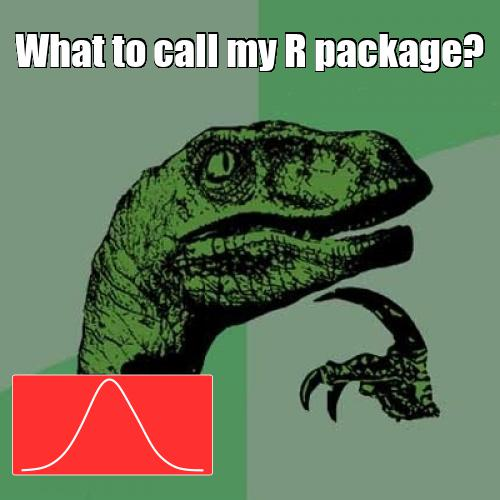

The memery package is used for generating internet memes
suited specifically to data analysts, combining the visual impact of an
attention-grabbing meme with graphic results of data analysis. This
vignette covers the basic usage of memery with several
examples.
Shiny example
Before getting to the code and other details, you can explore a quick
visual example using the Shiny app packaged with memery. It
displays an input meme background image and an inset plot which are
combined to form the analyst’s meme. The app makes available any ggplot
objects in the global environment created by the user to be used as
inset plots for memes. If none exist, memeApp will generate
a test plot ggplot object, memery_testplot, for the app
session. Available plots populate the inset plot selection menu.
magick suggested but not required
If the magick package is installed, memeApp
will launch in complete mode and the default image will be an animated
gif. If not installed, a simplified version of the example app will
launch, and only jpg and png files can be used. It is only listed as a
suggested package. Any package functionality that uses the
magick package returns gracefully with a notification about
the missing package. The only function in memery that uses
magick is meme_gif.
The meme
Now onto the core of the package. This consists of the background
image and overlying text label(s). The image can be provided as a path
to a local file or a URL. Below are examples of each, mixing up
combinations of source file and output file format. memery
also provides the classic meme font, Impact, as the default as well as
the text shadow outline effect, which is available for any font you
use.
Note on fonts
Note that Impact is a Windows font. If using memery on
Linux for example, you would have to first install the font if not
already installed on the system. If Impact or any other font family
passed to meme, e.g. family = "Consolas", is
not installed on an operating system, meme will ignore it
and fall back on family = "serif" internally. If
unfamiliar, explore the documentation and examples available for the
showtext and sysfonts packages, which
memery leverages.
out <- system.file("philosoraptor.jpg", package = "memery")
lab <- c("What to call my R package?", "Perhaps...")
meme(out, lab[1], "meme1.jpg")

There is sensible default label placement. If label is a
vector of length two, meme will make a symmetrical top and
bottom title/subtitle pair of text labels.
meme(out, lab, "meme2.jpg")
This is done using the default lab_pos argument, which
calls text_position. This convenience function is only
useful for one or two text labels. meme allows you to place
an arbitrary number of labels on the plot with arbitrary positioning by
passing your own list to lab_pos where each list element is
the same length as label. You can see what to do by looking
at the output of text_position.
text_position(n = 2)
#> $w
#> [1] 0.9 0.9
#>
#> $h
#> [1] 0.3 0.3
#>
#> $x
#> [1] 0.5 0.5
#>
#> $y
#> [1] 0.9 0.1The label and shadow color can be controlled by col and
shadow.

The arguments width and height do not need
to be provided. If missing, they are inferred from the dimensions of
img. However, providing width and
height overrides the source file dimension. This is useful
for large source images. Whether or not width or
height are provided, mult can also be used as
an image dimensions multiplier. See below for details.
Font size and image size
While the default size is set to 1, this is rather
arbitrary. There is really no perfect default because the ideal size
depends on several factors including the text string length, font
family, and the output file dimensions, as well as subjective taste such
as how much of the image width should the text cover, whether it will
display with insufficient or excessive height, or whether it will block
the view of important areas of the meme image. It makes sense to
explicitly supply size for every meme. Note that, all else
being equal, in general if you use an image scaled to, say, twice the
width and height of another, doubling size will retain
proportional label width coverage, but then height coverage will change.
Text may also display slightly differently in png vs. jpg output
files.
Avoid using mult to increase your image size as
it will expand the shadow effect. Use a larger source image instead.
mult is best for multipliers less than one, used to shrink
an image. For example, a picture taken with your phone may have
dimensions well in excess of what you need for a meme and it will be
more efficient to produce a smaller output file. width and
height are useful when you need to change the canvas size.
These will not alter the aspect ratio. These will all affect the
displayed label size in so much as it relates to the image
dimensions.
Optional plot overlay
In addition to drawing text labels on top of the background image,
meme offers the ability to overlay an inset plot, a plot
within the meme plot. This could be a thumbnail inset appearing in a
corner of the plot. For example, it could be a logo. But generally
speaking, this kind of behavior is directly accessible using the
grid framework and memery does not attempt to
duplicate this generality. Instead, it expects the inset
argument to be any ggplot object; `inset is not for reading in a second
image file. It is meant to be a plot.
By default, a ggplot object passed to meme via
inset will take up approximately the lower two thirds of
the plot and the full with, accounting for some margin space. It has a
semi-transparent background so that it does not completely obscure the
meme background image. These settings, background color, transparency,
size and position, can all be specified in the call to meme
as the following examples demonstrate.
library(ggplot2)
x <- seq(0, 2*pi , length.out = 50)
panels <- rep(paste("Philosoraptor's plot", c("A", "B")), each = 50)
d <- data.frame(x = x, y = sin(x), grp = panels)
txt <- c("Philosoraptor's plots", "I like to make plots", "Figure 1. (A) shows a plot and (B) shows another plot.")
p <- ggplot(d, aes(x, y)) + geom_line(colour = "cornflowerblue", size = 2) +
geom_point(colour = "orange", size = 4) + facet_wrap(~grp) +
labs(title = txt[1], subtitle = txt[2], caption = txt[3])
meme(out, lab, "meme4a.jpg", inset = p)

Note the default semi-transparent background that allows the meme
image to show through when the inset has a large coverage area. The
style includes rounded corners. This is from the grid
package. It is a rectangle layer in the same viewport as p;
it is not part of the ggplot theme. The latter is separate and can be
controlled by passing your own theme to ggtheme or setting
this to NULL, which falls back on whatever theme is set for
your plot p. The default theme for meme plots comes from
memetheme. Naturally, the theme will need to be customized
for many meme plots because underlying meme images are arbitrary.
Alternate inset templates
The graph overlay does not fit well, namely the annotations. This will be adjusted in a moment. First, a quick look at other position templates. An opaque background for the inset is more suitable for a thumbnail image that does not get in the way of the meme. The following example shows a bottom left corner inset graphic. An empty theme is used since there is no room in the inset for plot annotations.
set.seed(1)
p2 <- ggplot(data.frame(x = rnorm(10000)), aes(x)) +
geom_density(adjust = 2, colour = "white", size = 1)
pos <- list(w = 0.2, h = 0.2, x = 0.125, y = 0.125)
meme(out, lab[1], "meme4b.jpg", inset = p2, inset_bg = list(fill = "dodgerblue", col = "black"), inset_pos = pos, ggtheme = theme_void())

Above, the size and position was specified explicitly with
pos. However, the same could be done using
inset_position(type = "bl"). The available position
templates include the four corners via tl, tr,
br and bl for top right, top left, bottom left
and bottom right, respectively. There is also a center
thumbnail option. inset_position also takes
size and margin arguments to further specify
the thumbnail placement.
pos <- inset_position("bl", size = c(0.4, 0.2), margin = c(0.025, 0.05))
meme(out, lab[1], "meme4b2.jpg", inset = p2, inset_bg = list(fill = "firebrick1", col = "white"), inset_pos = pos, ggtheme = theme_void())
There are also four full quadrant templates. These are special cases
of the corner thumbnails. They are specified by appending the letter
q to the end of a corner template ID: tlq,
trq, brq, and blq. The
size argument is not applicable since these are fixed, full
quadrant plots, but these templates still allow for margin
control.
Improved fit
Returning to the more complex graph, the philosoraptor image is a bit
small for the first detailed plot shown above where the annotations go
off the image. For convenience, it is enlarged below by simply using
mult = 2 when including the full graph again. For now, drop
the second text label. It will be relocated later.
meme(out, lab[1], "meme4c.jpg", size = 2, inset = p, mult = 2)
Below is an example where the background panel is set to another semi-transparent color and the border color is no longer transparent.
vp_bg <- list(fill = "#FF00FF50", col = "#FFFFFF80")
meme(out, lab[1], "meme4d.jpg", size = 2, inset = p, inset_bg = vp_bg, mult = 2)

You can also increase the radius of the rounded corners, with, e.g.
Setting to zero will remove the rounding.
Multiple labels and vector arguments
As shown, more than one text label can be drawn on the meme plot and
assigned a different position. Other arguments are correspondingly
vectorized. Each label can have unique text size, font family, font
color, shadow color, and position arguments. Whereas the length of
elements in label_pos must match the length of
label, these other arguments are recycled if not as long as
label.
lab[2:3] <- c("Perhaps raptr... NO!!!", "Pfft. Figures.")
lab_pos <- list(w = rep(0.9, 3), h = rep(0.3, 3), x = rep(0.5, 3), y = c(0.95, 0.85, 0.3))
meme(out, lab, "meme5.jpg", size = c(1.25, 2.5, 1), family = c("serif", "Impact", "Impact"), col = clrs, shadow = rev(clrs), label_pos = lab_pos, inset = p, mult = 2)

Animated gifs
If ImageMagick is installed on your system, animated gifs can be used for data analyst memes.
d$grp <- gsub("Philosoraptor's", "Cat's", d$grp)
p <- ggplot(d, aes(x, y)) + geom_line(colour = "white", size = 2) +
geom_point(colour = "orange", size = 1) + facet_wrap(~grp) +
labs(title = "The wiggles", subtitle = "Plots for cats",
caption = "Figure 1. Gimme sine waves.")
lab <- c("R plots for cats", "Sine wave sine wave...")
pos <- list(w = rep(0.9, 2), h = rep(0.3, 2), x = rep(0.5, 2), y = c(0.9, 0.75))
img <- "https://raw.githubusercontent.com/leonawicz/memery/master/data-raw/cat.gif"
meme_gif(img, lab, "sine.gif", size = c(1.5, 0.75), label_pos = pos,
inset = p, inset_bg = list(fill = "#00BFFF80"), fps = 20)The generated file will look like this: